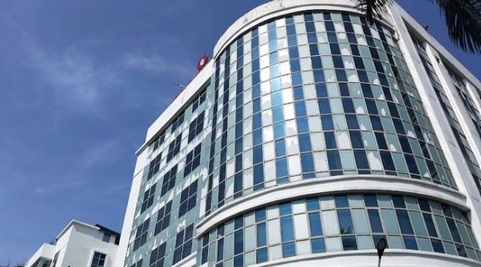

Techno Main Salt Lake, Kolkata
Techno Main Salt Lake is a premier B.Tech college located in Sector 5, Kolkata, known for its commitment to excellence in engineering education. The institution offers a diverse range of programs that equip students with the knowledge and skills needed for success in today’s competitive landscape.
The college boasts state-of-the-art facilities, including modern laboratories, well-equipped classrooms, and a robust library, providing an enriching learning environment. With a faculty comprising experienced professionals and industry experts, students receive high-quality mentorship and guidance throughout their academic journey.
Techno Main Salt Lake also emphasizes practical experience through various internships, workshops, and collaborative projects with leading companies, ensuring that graduates are industry-ready. The vibrant campus culture encourages participation in extracurricular activities, fostering teamwork, leadership, and creativity among students.
Overall, Techno Main Salt Lake is dedicated to shaping the future of aspiring engineers, making it an excellent choice for higher education in technology and engineering.
